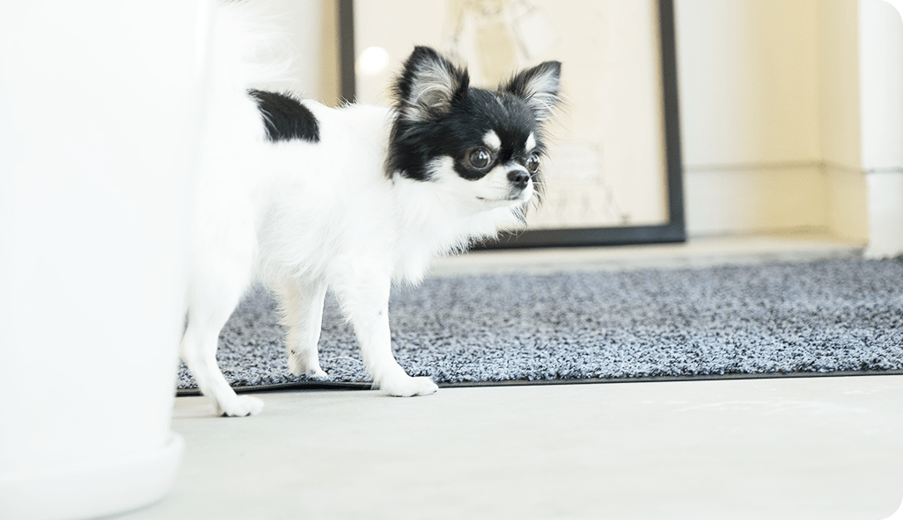
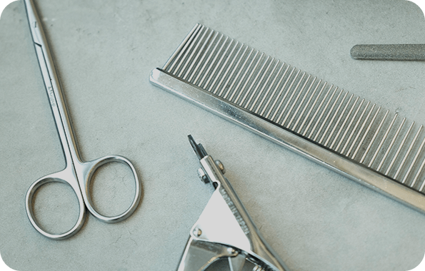
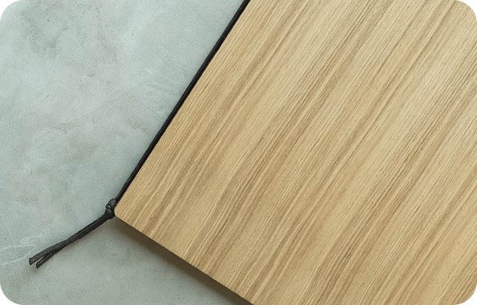
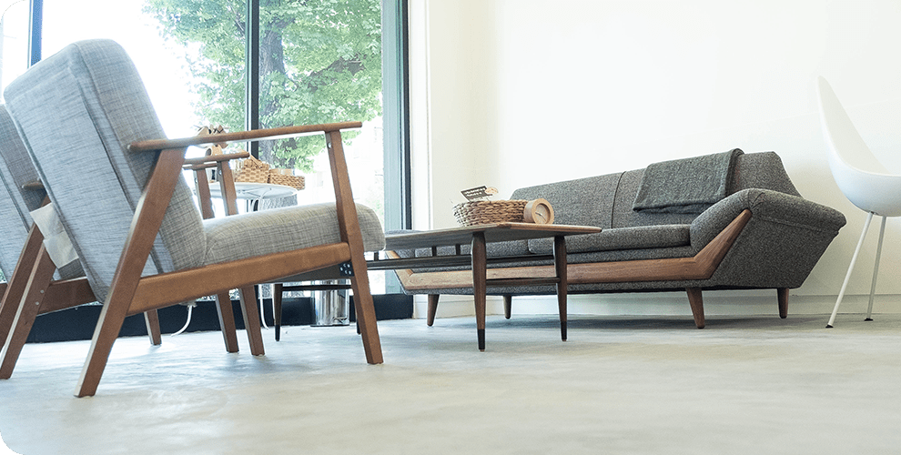
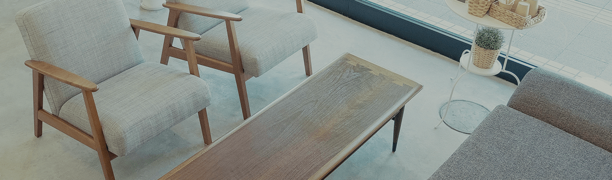

1F,NO.2 shinmei Blog. 3-6-7, Kinjo,
Kita-ku Nagoya-shi,
Aichi, 462-0847, Japan
image photo-ENTRANCE
1
ーーーーー
3
CONTENT
01
ABOUT
ー
私たちの思い
「ワンちゃん」のことをとことん考えた、
「わんちゃん」に優しい、
ストレスケアをしっかり考えたお店。
READ MORE


CONTENT
02
CONTENT
03
SYSTEM
MENU
ー
ー
施術の流れをご紹介
オススメのメニューをご紹介
PHOTO
ー
ーーーーー
ーーーーー
ーーーーー
ーーーーー
ーーーーー

SHOP
―
店舗 tocotoco(トコトコ)
住所 〒462-0847
愛知県名古屋市北区金城3丁目6 - 7 第 2 新明ビル1F
Google mapを見る
開店時間 10:00 ~ 19:00
定休日 火曜日
駐車場 「三井のリパーク金城3丁目」に入って26番、32番がtocotocoの
駐車場です。
動物取扱業登録番号 保管 : 第300686号
登録年月日 : H30.5.23
有効期限 : H35.5.22
取扱責任者 : 平岡愛

ご予約の方は、下記電話番号からご連絡ください。
TEL
052 908 1777
予約受付時間 10:00 ~ 19:00
1F,No.2 shinmei Blog. 3-6-7,Kinjou,
Kita-ku Nagoya-shi,
Aichi, 462-0847, Japan
Ⓒtocotoco trimming salon